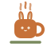

Transformo dado bruto em resposta. I turn raw data into an answer.
Estudante de Ciência da Computação na Unisinos, com nove meses de Iniciação Científica CNPq em inteligência artificial. Computer Science student at Unisinos, with nine months as a CNPq research fellow in artificial intelligence.
Buscando minha primeira oportunidade de estágio em tecnologia na Grande Porto Alegre. Looking for my first technology internship in Greater Porto Alegre.
Desenvolvedora de IA AI Developer
ex-bolsista CNPq former CNPq fellowDesenvolvi pipelines de processamento e classificação de áudio em Python, aplicando transfer learning e análise de espectrogramas para identificar espécies bioindicadoras em gravações de campo. Built audio processing and classification pipelines in Python, applying transfer learning and spectrogram analysis to identify bioindicator species in field recordings.
Estruturei e trato dados brutos de ciência cidadã — gravações contínuas de 24h coletadas em escolas públicas da Região Metropolitana de Porto Alegre — para análise analítica reproduzível. Structured and cleaned raw citizen-science data — continuous 24h recordings collected in public schools around Porto Alegre — for reproducible analysis.
Operei ferramentas de classificação acústica (Chirpity) e de gestão colaborativa de dados (Arbimon), documentando fluxo e requisitos em Markdown para garantir reprodutibilidade. Operated acoustic classification (Chirpity) and collaborative data management (Arbimon) tools, documenting the workflow and requirements in Markdown for reproducibility.
Colaborei com pesquisadores de mais de 6 áreas — Direito, Arquitetura, Psicologia, entre outras — traduzindo requisitos de negócio não técnicos em etapas estruturadas de processamento. Worked with researchers from over 6 fields — Law, Architecture, Psychology and others — translating non-technical requirements into processing steps.
formação education
complementar additional
Sou a Alysia — Alys para quem chega. O que me interessa em computação é a parte que responde perguntas: pegar um dado sujo, entender de onde ele vem, modelar direito e chegar num número que alguém de fora da área consiga ler. I'm Alysia — Alys to anyone who walks in. What draws me to computing is the part that answers questions: taking messy data, understanding where it came from, modelling it properly, and arriving at a number someone outside the field can actually read.
Na Iniciação Científica fiz isso com áudio de campo em Python, por nove meses. No momento, meu foco é aprofundar minha base técnica na faculdade, mantendo um grande interesse na área de dados e desenvolvimento de software. Busco meu primeiro estágio para colocar meus conhecimentos em prática e aprender como a tecnologia resolve problemas em cenários reais. Uso ferramentas de IA todos os dias para construir coisas de verdade, não para pular etapa. I did that with field audio in Python for nine months, as a research fellow. Currently, my focus is deepening my technical foundation at university, maintaining a strong interest in data and software development. I'm looking for my first internship to put my knowledge into practice and learn how technology solves real-world problems. I use AI tools every day to build real things, not to skip steps.

Fora disso: café em quantidade discutível e uma coelhinha que virou logo. Outside that: a debatable amount of coffee and a little rabbit that became a logo.
Foco atual: construindo uma base sólida para a carreira em tecnologia. Current focus: building a solid foundation for a tech career.
Em fase de definição: estruturando um problema real para resolver integrando fundamentos de desenvolvimento e análise. In definition phase: structuring a real problem to solve by integrating development and analysis fundamentals.
O que estou lendo, jogando e vendo — a parte não profissional do café. What I'm reading, playing and watching — the café's off-duty side.
jogos games
anime
Primeiro estágio em tecnologia, com foco em dados, desenvolvimento ou IA — presencial na Grande Porto Alegre, híbrido ou remoto. A first tech internship, focusing on data, development or AI — on-site in Greater Porto Alegre, hybrid or remote.
Sim: por nove meses tratei gravações contínuas de campo em Python na Iniciação Científica — dado bruto, sujo e volumoso, com pipeline documentado. Yes: for nine months I processed continuous field recordings in Python as a research fellow — raw, messy, high-volume data with a documented pipeline.
Porque quase todo trabalho aqui começou com um café. O site é feito e mantido por mim — o que também conta como projeto. Because nearly everything here started with a coffee. The site is built and maintained by me — which counts as a project too.
Recrutando para vagas de tecnologia (dados, desenvolvimento ou IA)? Deixe um recado — respondo no mesmo dia. Hiring for tech roles (data, development or AI)? Leave a note — I reply the same day.
ou direto: or straight to: oi@alys.cafe